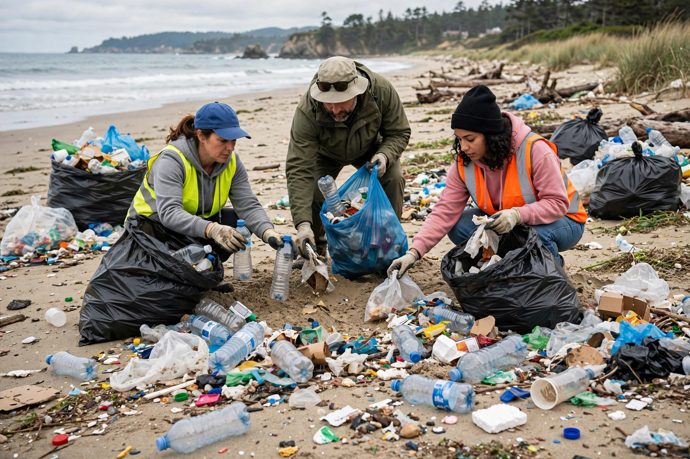

Plastic pollution

Plastic pollution is the accumulation of plastic objects and particles in the environment, from bottles and fishing gear down to microplastics smaller than a grain of sand. Because plastics barely degrade, nearly every piece ever produced still exists somewhere unless it was burned.
Estimates of plastic entering the oceans each year run to the millions of tonnes, and plastic debris has been found from the summit of Everest to the floor of the {L('Mariana_Trench')}.
Sources and pathways
Mismanaged waste is the main source, especially in rapidly growing economies with limited collection; rivers carry a large share to the sea. Other pathways include lost and discarded fishing gear ('ghost gear'), tyre wear particles, synthetic clothing fibres shed in washing, industrial pellets, and atmospheric transport. In the open ocean, currents concentrate floating debris into gyres such as the Great Pacific Garbage Patch.
Sunlight and waves fragment large items into microplastics rather than removing them; nanoplastics may cross biological membranes, and plastic particles have been detected in air, drinking water, seafood, human blood and placentas — with health consequences still being researched.
Responses
Responses include bans and charges on single-use items, deposit-return schemes, extended producer responsibility, improved waste systems, and design for recycling (actual global plastic recycling rates remain in the single digits per cent). Negotiations toward a global plastics treaty under the UN have been under way since 2022, addressing the full life cycle from production to disposal. See Recycling and Environmental protection.
See also: Pollution · Water pollution · Recycling · Ocean · Environmental disaster